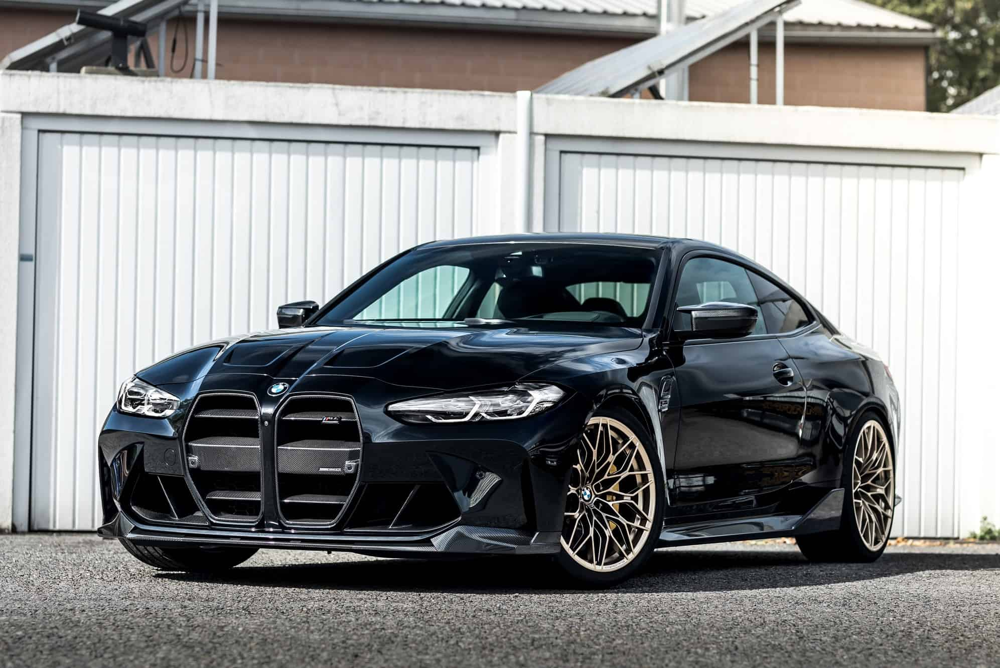
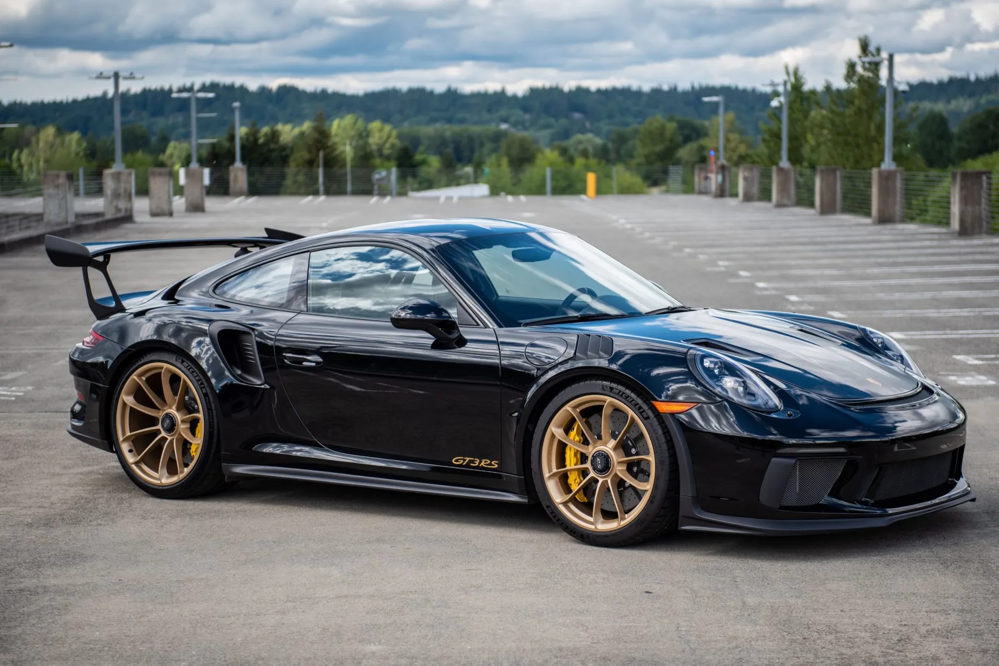
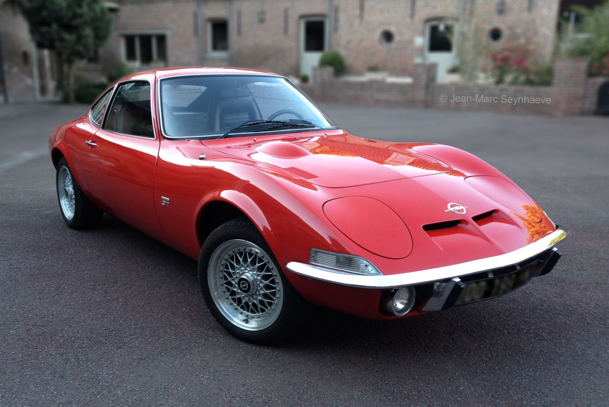
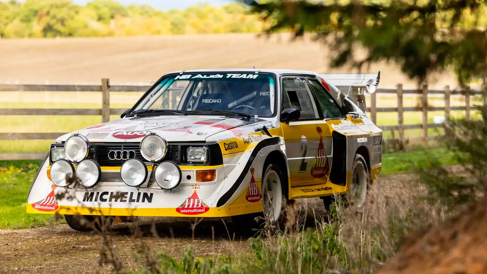

Germany

About Germany
Germany is a country in Central Europe. It is bordered by nine countries: Denmark to the north, Poland and the Czech Republic to the east, Austria and Switzerland to the south, and France, Luxembourg, Belgium, and the Netherlands to the west.
Neuschwanstein-Castle
 🏰 Neuschwanstein Castle – Germany’s Fairytale Fortress Neuschwanstein Castle is one of Germany’s most iconic landmarks,
located in the Bavarian Alps near the town of Füssen. Built in the 19th century by King Ludwig II of Bavaria, the castle
was inspired by medieval legends and the operas of composer Richard Wagner.
🏰 Neuschwanstein Castle – Germany’s Fairytale Fortress Neuschwanstein Castle is one of Germany’s most iconic landmarks,
located in the Bavarian Alps near the town of Füssen. Built in the 19th century by King Ludwig II of Bavaria, the castle
was inspired by medieval legends and the operas of composer Richard Wagner.
With its dramatic towers, picturesque setting, and romantic architecture, Neuschwanstein looks like it came straight
out of a fairytale. Although it was never fully completed, it remains one of the most visited castles in Europe and even
inspired the design of Disney’s Sleeping Beauty Castle.
Country Characteristics
| Characteristics | Details |
|---|---|
| Continent | Europe |
| Capital | Berlin |
| Official Language | German |
| Currency | Euro |
| Population | 83.5 million |
| Known for | Automobile industry and War |
⚔️ Major Wars Involving Germany
The most famous conflicts involving Germany (or the states preceding it, such as Prussia) are the Franco-Prussian War and the two World Wars.
-
Franco-Prussian War (1870-1871)
A conflict that opposed the French Empire to Prussia and allied German states, leading to the **unification of Germany** and the annexation of Alsace-Lorraine.
-
World War I (1914-1918)
A global conflict where the German Empire faced the Allies, resulting in the collapse of the Empire and the establishment of the Weimar Republic.
-
World War II (1939-1945)
The **Nazi Germany** regime (Third Reich) faced the Allies. Noted for key battles on the Eastern Front (Stalingrad, Kursk) and the systematic genocide (The Holocaust).
🚘Famous Cars from Germany
-
 BMW M3
-
 Porsche GT3
-
 Opel GT
-
 Audi Quattro

if you want more information about Germany : https://en.wikipedia.org/wiki/Germany